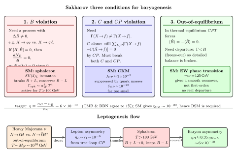

原初 baryogenesis — 物质 vs 反物质的不对称?
上一节我们处理了 strong CP 问题: QCD 的 $\theta$ 角在 CP 层面上被观测限制到 $|\bar\theta| \lt 10^{-10}$, 小得离奇, 暗示一个 Peccei-Quinn 机制或轴子. 这一节我们换一个同样在早期宇宙舞台上演出的戏码——物质/反物质不对称. 两条线表面不同: 一条是"为什么一个参数这么小", 另一条是"为什么两个在基本理论里对称的量这么不对称". 但它们都点到同一个要害: 标准模型在某些守恒律上过于干净, 现实不然.
第一个问题是, 我们怎么知道宇宙是物质主导? 我们能肉眼看见的只是我们这一隅. 万一仙女座是反物质, 再远的某个星团是反物质呢? 实际上有三个硬观测否定这个可能. 其一: 若两类物质共存, 边界上会持续发生 $p \bar p \to \gamma$ 湮灭, 产生一个 100 MeV 量级的特征 γ 背景, 天文上没看到. 其二: 宇宙射线里反质子/质子比例 $\bar p/p \sim 10^{-4}$, 而这个 $10^{-4}$ 与二次产生 (宇宙射线 $p$ 撞上星际介质的次级反应) 的预言一致——换句话说, 没有原初反物质源在给我们送反质子. 其三, 也是最硬的: CMB 与 BBN 独立把 $\eta = n_B/n_\gamma$ 这个数定死 (两者在 $6\times 10^{-10}$ 吻合到百分几), 而 $\eta$ 是 净重子密度, 若有等量反物质早在 100 GeV 时代就湮灭光了, $\eta$ 会落到 Boltzmann 因子抑制的 $\sim 10^{-18}$ 水平.
一、把不对称数化: η 是什么, 多大?
定义重子-反重子不对称参数
$$ \eta \equiv \frac{n_B - n_{\bar B}}{n_\gamma}, $$
其中 $n_B, n_{\bar B}$ 是重子与反重子的数密度, $n_\gamma$ 是光子数密度. 用光子归一是因为宇宙膨胀下 $n_\gamma a^3$ 几乎守恒 (熵守恒修正可忽略), 所以 $\eta$ 在 QCD 转变之后是一个常数, 可以跨越宇宙历史直接比较.
两路独立测量:
- CMB: 声学震荡峰的相对高度对 $\Omega_b h^2 \propto \eta$ 敏感, Planck 2018 给 $\Omega_b h^2 = 0.0224 \pm 0.0001$, 换算 $\eta = (6.14 \pm 0.04)\times 10^{-10}$.
- BBN: $T \sim 1\,\mathrm{MeV}$ 的轻元素合成产率 (D/H, $^3$He, $^4$He, $^7$Li) 与 $\eta$ 耦合, 观测 D/H $\approx 2.5\times 10^{-5}$ 给 $\eta = (6.1 \pm 0.2)\times 10^{-10}$.
两个在完全不同的物理 (一个是 380000 yr 的光子解耦, 另一个是宇宙 1 秒左右的核反应) 下得到同一个数, 是 Big Bang 宇宙学最漂亮的一致性检验之一. 以下我们固定
$$ \eta = 6\times 10^{-10} \tag{1} $$
为要解释的目标数.
为什么这个数这么"尴尬"? 若 $\eta = 0$, 宇宙对称, 物质反物质在 QCD 湮灭阶段就归零, 不会有星系、没有我们; 若 $\eta \sim 1$, 早期宇宙全是物质, 也解释不了光子过剩. 实际 $\eta \sim 10^{-10}$ 说明早期每 $10^{10}$ 个反重子对应 $10^{10}+1$ 个重子——一个十亿分之一的微小偏差, 但足够在湮灭后留下整个可见宇宙.
二、Sakharov 三条件的必要性 — 严格 deepdive
这是本节要严格地推一遍的 cliché. Sakharov 1967 在一篇只有一页的短文 Violation of CP Invariance, C Asymmetry, and Baryon Asymmetry of the Universe 里列出了三条件. 教科书常常把它们写出来就过了——但每一条为什么"缺一不可"? 我们逐条严格地反证.
起始假设. 早期宇宙 (如暴胀终结后) 处于对称初态: $n_B(t_0) = n_{\bar B}(t_0)$, 即净重子数 $N_B(t_0) \equiv n_B(t_0) - n_{\bar B}(t_0) = 0$. 我们要问: 在什么物理条件下, 能自演化到 $N_B(t) \ne 0$?
条件 1: B violation (重子数破缺). 若基本哈密顿量满足 $[H, \hat B] = 0$ (B 严格守恒), 则 $N_B$ 是运动常数, $\mathrm d N_B/\mathrm d t = 0$, 从对称初态出发永远 $N_B = 0$. 这是最直接的第一步: 要让 $N_B$ 改变, 必须有过程 $X \to Y + B$ (其中 Y 不带重子数, 或带不同重子数). 标准模型在微扰论层面 B 守恒 (每个顶点都守恒 B), 但非微扰 sphaleron 过程破缺 $B + L$; GUT 里 $p \to e^+ \pi^0$ 直接破 B.
条件 2: C 与 CP 破缺. 假设有 B-breaking 过程 $X \to f$, 记其速率 $\Gamma(X \to f)$. 若 C 对称成立, 则每个 $X \to f$ 过程都有一个 C-镜像 $\bar X \to \bar f$ 且
$$ \Gamma(X \to f) = \Gamma(\bar X \to \bar f). $$
若 $X \to f$ 增加一个 $\Delta B$, 则 $\bar X \to \bar f$ 减少一个 $\Delta B$ (反粒子反号). 对称初态下 $n_X = n_{\bar X}$, 两过程频率相等, 净 $\Delta N_B = 0$. 但如果 C 破缺, $\Gamma(X \to f) \ne \Gamma(\bar X \to \bar f)$, 一侧产生重子更多, 净 $N_B$ 才能改变.
单破 C 不够, 还得破 CP. 原因: 即便 C 破了, 若 CP 仍守恒, 把末态 f 分成有手征性的态 ("左手 f" vs "右手 f"), C 破缺只能在二者间分配, 但对 CP-共轭求和后抵消. 具体地, 若记 $\Gamma(X \to f_L), \Gamma(X \to f_R)$, 则 CP 给
$$ \Gamma(X \to f_L) = \Gamma(\bar X \to \bar f_R), \qquad \Gamma(X \to f_R) = \Gamma(\bar X \to \bar f_L). $$
求 B 量总和: $\sum_{L,R}[\Gamma(X \to f_{L,R}) - \Gamma(\bar X \to \bar f_{L,R})] = 0$, 净改变还是零. 只有 CP 也破了, 两行才可以分别不对称, 全总才能不为零. 故必须同时破 C 与 CP. 这一点在实际模型里通过相位 (如 CKM 的 $\delta_{CP}$, 或重右手中微子的 Majorana 相位) 实现.
条件 3: 偏离热平衡. 这一条是三者里最微妙的. 前两条都有"破什么对称" 的直观, 第三条是一个热力学约束, 证明要动用 CPT.
假设系统处于完全热平衡, 温度 $T$. 重子数算符 $\hat B$ 在 CPT 下转号: $(\text{CPT}) \hat B (\text{CPT})^{-1} = -\hat B$. 热平衡下系统由配分函数 $Z = \mathrm{Tr}\,e^{-H/T}$ 刻画, 期望值为
$$ \langle \hat B \rangle = \frac{1}{Z}\mathrm{Tr}(\hat B\, e^{-H/T}). $$
CPT 定理 (局域 Lorentz 不变场论必然保) 说 $[\text{CPT}, H] = 0$, 即 $\text{CPT}\cdot e^{-H/T}\cdot (\text{CPT})^{-1} = e^{-H/T}$. 因此
$$ \langle\hat B\rangle = \frac{1}{Z}\mathrm{Tr}\!\left[(\text{CPT})\hat B (\text{CPT})^{-1}(\text{CPT}) e^{-H/T}(\text{CPT})^{-1}\right] = \frac{1}{Z}\mathrm{Tr}(-\hat B\, e^{-H/T}) = -\langle \hat B\rangle, $$
强迫 $\langle\hat B\rangle = 0$. 即使 B 破、CP 破, 只要系统在热平衡里, CPT 保证正反应与逆反应速率彼此抵消, 净重子数维持为 0. 这是一个动力学版本的细致平衡: $X \to f$ 与 $f \to X$ 速率相等, $\bar X \to \bar f$ 与 $\bar f \to \bar X$ 速率也相等, CPT 再把两组联起来, 最后净产率锁在 0.
要打破这锁, 必须偏离平衡. 早期宇宙是现成的场所: Hubble 膨胀率 $H \sim T^2/M_{\mathrm{Pl}}$, 若某过程的反应率 $\Gamma \lt H$, 它就"冻结" (Freeze-out) 了——正反应比逆反应快 (或更慢), 细致平衡破坏, 净 B 可以累积. 一个经典的 out-of-equilibrium 情境: 重 Majorana 中微子 $N$ 的质量 $M_N \sim 10^{10}\,\mathrm{GeV}$, 当 $T \sim M_N$ 时它的衰变宽度 $\Gamma_N \ll H(T)$, 于是 $N$ 不跟上平衡浓度的下降, 出现 out-of-equilibrium 衰变, CP 破缺则给出净轻子数.
三条合起来就是 Sakharov 三条件: B 破、C 与 CP 破、偏离平衡. 去任一条件都强迫 $\eta = 0$. 这是从"对称初态" 自洽推出来的 no-go 定理, 不是经验规则.
三、SM 三条件都有, 为何仍不够?
Sakharov 只规定了三条必要条件, 并没说标准模型满不满足. 1985 年 Kuzmin-Rubakov-Shaposhnikov (KRS) 的论文 On the Anomalous Electroweak Baryon Number Nonconservation in the Early Universe 推了一步: SM 原则上三条都满足. 但量化一做, 结论是 SM 产生的 $\eta$ 远小于观测.
SM 的 B 破来自 sphaleron. 虽然微扰论中 SM 的 $B, L$ 分别守恒, 但 electroweak 非阿贝尔规范场有拓扑非平凡的 $SU(2)_L$ vacua, 它们之间的跃迁通过 instanton/sphaleron 同时破缺 $B + L$ (守恒 $B - L$), 每次跃迁产生 $\Delta B = \Delta L = N_g = 3$ (每代各一夸克与轻子). 低温时 instanton 势垒 $E_{\text{sph}} \sim 9\,\mathrm{TeV}$ 导致指数压制 $e^{-16\pi^2/g^2} \sim 10^{-160}$, 完全冻结; 但在 $T \gt 100\,\mathrm{GeV}$ (EWSB 前) sphaleron 热激发活跃, 速率 $\Gamma_{\text{sph}} \sim \alpha_W^5 T^4$, 远超 Hubble. 这是 B 破的引擎.
SM 的 C 与 CP 破来自 CKM. CKM 矩阵的 Jarlskog 不变量 $J_{CP} \approx 3\times 10^{-5}$ 是 CP 破的"总量". 但它必须和夸克质量差组合, 粗略估计给 CP-破效率
$$ \delta_{CP} \sim J_{CP} \cdot \frac{(m_t^2 - m_c^2)(m_c^2 - m_u^2)(m_t^2 - m_u^2)(m_b^2 - m_s^2)(m_s^2 - m_d^2)(m_b^2 - m_d^2)}{T_c^{12}}, $$
其中 $T_c \sim 100\,\mathrm{GeV}$ 是 electroweak 相变温度. 代入数字, 这个比值 $\sim 10^{-20}$, 致命地小.
SM 的偏离平衡来自 electroweak 相变. Higgs 场获真空期望值时, 若相变是一阶 (有不连续性、泡泡成核), 泡泡壁前就是非平衡区——sphaleron 在泡外仍活跃, 在泡内已冻结, 穿越壁时产生净 $B + L$. 问题是: 格点 QCD 与 lattice electroweak 的数值结果表明, Higgs 质量 $m_H \gtrsim 75\,\mathrm{GeV}$ 时, SM 的 electroweak"相变" 其实是连续的 crossover, 不是一阶; $m_H = 125\,\mathrm{GeV}$ 的实际世界里, 这根本不算个相变, 远远偏不够平衡.
合起来:
$$ \eta_{\text{SM}} \sim \delta_{CP} \cdot \text{(非平衡因子)} \sim 10^{-20} \cdot 10^{-x} \ll 10^{-10}. \tag{2} $$
这是一条 极限检验: SM 把三条件在理论上都"有", 但每一条都弱到量化上拿不出 $10^{-10}$. 结论: 必须有 BSM 物理给三条件之一增强. 这也是现今 baryogenesis 研究的分水岭.

四、BSM 机制: leptogenesis 与其他路线
SM 失败, 目前主流的三条 BSM 路线各补一块:
Leptogenesis (Fukugita-Yanagida 1986). 最受欢迎的方案. 在 see-saw 机制里引入重 Majorana 右手中微子 $N_i$ (质量 $M_N \sim 10^{9}$-$10^{14}\,\mathrm{GeV}$), 其衰变 $N \to \ell H$ 与 $N \to \bar\ell H^*$ 因 tree-loop 干涉产生 CP 破, 给出净轻子不对称
$$ \epsilon_1 \equiv \frac{\Gamma(N_1 \to \ell H) - \Gamma(N_1 \to \bar\ell H^*)}{\Gamma_{\text{total}}} \sim \frac{3}{16\pi}\frac{M_1}{M_2}\mathrm{Im}(y_\nu^2) \sim 10^{-6}. $$
当 $T \sim M_1$ 时 $N_1$ 的 Yukawa 耦合使它比 Hubble 冻得慢, 衰变 out-of-equilibrium, 轻子不对称 $Y_L \sim \epsilon_1 \cdot (\text{efficiency})$ 累积; sphaleron 在 $T \gt 100\,\mathrm{GeV}$ 活跃, 把 $B - L$ 守恒的轻子不对称部分转换为重子不对称. 粗略
$$ \eta_B = \frac{a_{\text{sph}}}{f_{\text{dilute}}}\,\epsilon_1\cdot\kappa \approx \frac{28/79}{27.3}\cdot 10^{-6}\cdot 0.1 \approx 10^{-9}, $$
与观测 $6\times 10^{-10}$ 在量级上一致. 这让 leptogenesis 成为极有吸引力的机制——它把中微子质量 (通过 see-saw) 与宇宙重子不对称挂起来, 两个看似无关的观测同源. 实验上要验证 leptogenesis 极难 ($M_N \sim 10^{10}\,\mathrm{GeV}$ 远超任何对撞机), 但它预言低能 neutrino CP 破 ($\delta_{PMNS}$, T2K/NOvA 目前测到 $\sim 1.5\pi$ 附近) 与 $0\nu\beta\beta$ 衰变 (Majorana 本质的直接证据) 的存在.
Electroweak baryogenesis (EWBG). 保留 SM 的 sphaleron-B 破, 但通过 BSM 把一阶 EW 相变"救回来": 典型做法是加一个 scalar singlet 或扩展 Higgs sector (2HDM, MSSM 的 stop), 使 Higgs 势在 $T_c$ 附近出现势垒, 产生一阶相变与泡泡壁. 额外 CP 破相位则来自新标量-费米子耦合. 优点: 低能标, 对撞机可直接搜 (LHC 对 2HDM、stop 的约束已将参数空间挤得很紧). 缺点: 预言与 EDM 限制冲突 (ACME 电子 EDM $\lt 1.1\times 10^{-29}\,e\,\mathrm{cm}$ 排除大片 CP-破 BSM 参数).
GUT baryogenesis. 历史上最早的方案: 大统一 $SU(5)$ 或 $SO(10)$ 里重规范玻色子 $X, Y$ (质量 $M_X \sim 10^{15}\,\mathrm{GeV}$) 衰变 $X \to qq$ vs $X \to \bar q \bar \ell$ 直接破 B. 问题: 这些方案产生的 $\eta$ 是在 GUT 能标, 之后 electroweak sphaleron 会把 $B + L$ 冲掉, 只剩 $B - L$ 部分存活. 若 GUT 机制给的是 $B$-only (如最小 $SU(5)$, 守恒 $B - L$), sphaleron 完全洗光. 这是 1980s 的经典陷阱; 必须用 $SO(10)$ 之类破 $B - L$ 的大统一才管用.
代几个数字定方向. 以 leptogenesis 为例, 要给 $\eta \sim 6\times 10^{-10}$, 需 $\epsilon_1 \gtrsim 10^{-6}$. 由 $\epsilon_1 \sim M_1 \Delta m_\nu / v^2$ 估, 结合 atmospheric $\Delta m_\nu^2 \sim 2.4\times 10^{-3}\,\mathrm{eV}^2$ 与 $v = 174\,\mathrm{GeV}$, 得 Davidson-Ibarra 下界
$$ M_1 \gtrsim 10^9\,\mathrm{GeV}. $$
这是一个看起来随便但实际非常硬的预言——任何 leptogenesis 实现都需要最轻的右手中微子重于 $10^9\,\mathrm{GeV}$, 远超 LHC 能标. 它给的图景是"宇宙 baryogenesis 与宇宙早期 $T \sim 10^{10}\,\mathrm{GeV}$ 阶段挂钩", 与现在对撞机物理完全不重合, 而实验验证只能靠 CMB 极化 (primordial gravitational waves)、低能中微子振荡、以及 $0\nu\beta\beta$ 等间接线索.
历史插曲值得讲一下. Sakharov 1967 写这篇论文时, 苏联官方科学路线正被 Lysenko 与"反物理" 派打压 (他本人正处于从氢弹设计师转为人权活动家的过程中). 那篇短文只有一页, 没有引用 ("too trivial"), 连 JETP 的主编都几乎拒刊. 里面他提出 B 破来自 proton 衰变 ($p \to e^+ \pi^0$), CP 破来自 $K^0$-$\bar K^0$ 系统 (这是刚在 1964 Cronin-Fitch 发现的), 偏离平衡来自宇宙膨胀本身. 这些成分每一条都是 1964-1967 间的新东西, 串起来 Sakharov 给了一幅宇宙学路线图——但论文被忽略了将近 20 年. 直到 1985 年 KRS 把 sphaleron 加进来, Kolb-Turner 的 The Early Universe 1990 把整套推论系统化, Sakharov 三条件才成为标准 paragraph. 讽刺的是, 今天"Sakharov conditions" 在 GR 教科书与宇宙学课程里几乎每一本都出现, 而 Sakharov 自己在 1967 年后再也没碰过这个话题——他被 KGB 流放到 Gorky, 花下半生为人权奔走.
极限检验: 若 $\eta$ 完全由 CMB 温度各向异性定 (BBN 忽略), 得 $\eta = 6.14\times 10^{-10}$; 若仅由 BBN D/H 定, 得 $6.1\times 10^{-10}$. 两者相差 < 1%. 这个一致性不是靠拟合任何自由参数——BBN 时宇宙 1 秒, CMB 时 38 万年, 差了 $10^{13}$ 倍时间. 任何 baryogenesis 机制产生的 $\eta$ 在 BBN 之前必须稳定到这个 1% 精度, 这反过来限制 BSM 晚期再 baryogenesis 的可能 (低能标 baryogenesis 会在 BBN 之后留下扰动, 被排除).
小结
本节做了四件事. 一, 把 "物质反物质不对称" 数字化: $\eta = (n_B - n_{\bar B})/n_\gamma = 6\times 10^{-10}$, CMB 与 BBN 双路独立验证到 1%. 二, 严格 deepdive Sakharov 三条件的必要性: 从对称初态 $n_B = n_{\bar B}$ 出发, 证明 B 守恒禁止 $N_B$ 改变; C-CP 对称强迫 $X \to f$ 与 $\bar X \to \bar f$ 速率对称, 净 B 为零; CPT 下热平衡强迫 $\langle \hat B\rangle = -\langle \hat B\rangle = 0$. 三, 把 SM 代入三条件: sphaleron 提供 B 破, CKM 提供微弱 CP 破, EW 相变本该提供非平衡——但 CP-破幅度 $\delta_{CP} \sim 10^{-20}$ 且 $m_H = 125\,\mathrm{GeV}$ 把相变变为 crossover, SM 给的 $\eta_{\text{SM}} \sim 10^{-20}$ 远小于观测. 四, BSM 三方案 leptogenesis / EWBG / GUT 的量级估算, 其中 leptogenesis 最简洁, 把 see-saw 中微子质量与宇宙重子不对称绑在一起, 预言 $M_1 \gtrsim 10^9\,\mathrm{GeV}$. 下一节我们将沿同一方向继续: 既然三个耦合 $\alpha_1, \alpha_2, \alpha_3$ 的 RG 流都指向一个 $10^{15}$-$10^{16}\,\mathrm{GeV}$ 的交汇点, 我们就把它正式化——大统一理论 (GUT) 的动机、对称群 $SU(5), SO(10)$、质子衰变预言与实验限制. 早期宇宙是整个标准模型与 BSM 的试金石, baryogenesis 这一节看到的 "SM 不够" 在下一节会接到 "需要什么 UV 完备化".
▲